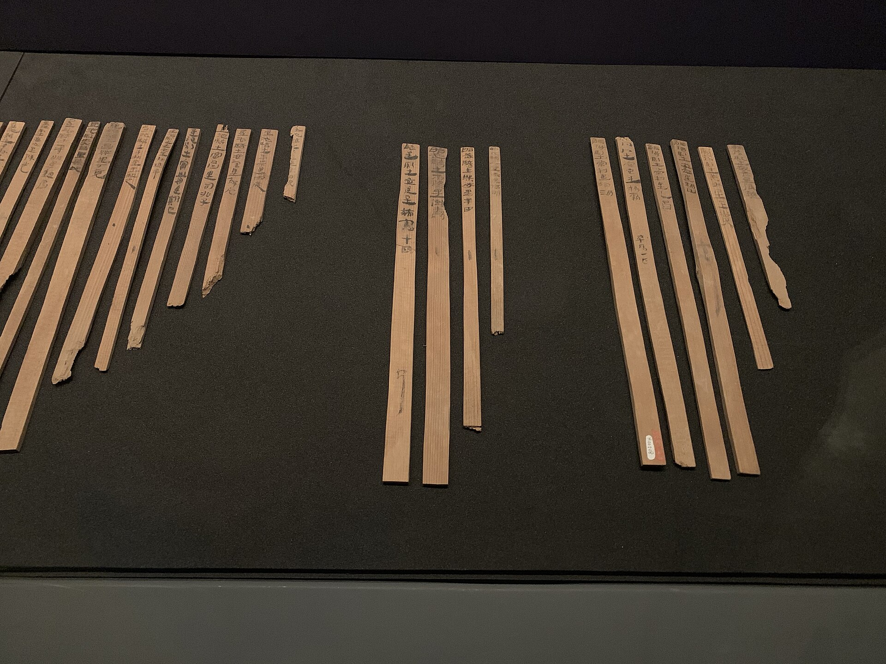

第 3 章
宫墙内的学徒期
永元二年九月库藏清点簿第三简载：“东墙，木签三：一絮，一麻，一敝褐。”墨迹干透后，令史将简牍收入漆匣。这些字不会给旁人看——只给查账的人看。每年清点，尚方的令史会带着几个小吏沿墙走过，手里拿一根有刻度的竹签，按序对照簿册。每对上一项，就用炭条在木简边画一道极短的竖线。
蔡伦第一次看清这些标签，是在一个秋日午后。他那时刚被差去库房取几卷用剩的麻绳。几卷竹简抱在怀里，腰侧系着一块擦汗的旧布。他走到东墙下，看见那排木牌在日影里微微发亮。墨字已经不大鲜明，像一层干涸的老漆。他认得这些字。絮，麻，敝褐。
他想起的是另一处地方：耒阳城外的小河边，女人们把旧衣拆成布片，在青石上反复捶打，把硬结的纤维打松，再铺开来晒干。那些松开的纤维，她们也叫“絮”。它不是丢掉的废物，但也不是什么值钱的东西。填衣、补衲，偶尔用作引火。没有人会为自家的碎絮设一块带字的木牌。
宫里却会。在这小小的标签面前，蔡伦第一次把“宫中”和“作坊”两个念头并到了一处。
这个动作不过几息之间，旁边的小黄门已经催他快走。他放下手，重新抱紧竹简，低头穿过廊下。那时候他还不会知道，这块木牌会在他日后的人生里一再出现，像一个极早埋下的标记。他只知道一件事：在宫里，凡有标签之处，必有一本账。凡有账之处，必有一双点数的手。
宫中最初的日子，不是从某个明确的起点开始的。没有一场仪式宣告他从“铁官之子”变成“宫墙内的学徒”。只有一长串极琐细的差事，像雨水顺着瓦当一滴一滴落下，看不出哪一滴最重要，却把地面洗出了凹痕。蔡伦被分到掖庭的一处执役班。
清晨未明，宫钟尚未响全，值夜的宦官就在长巷里踱步，手里的铜板不时在腰间轻轻一碰，发出极小的清响。新入宫的小宦官们被叫起来，先学一样：站立。不是兵士的挺立，也不是官长的端坐，而是一种极敛的站法：肩背微含，下颌略收，眼睛看前头人的后襟，双手自然垂在两侧，指尖贴住外袍。老宦官说：“在宫里，先学不碍眼。”
据史学界分析，东汉时期的宦官平均净身入宫年龄在9.6岁，蔡伦十二岁入宫，在当时并不算早。这漫长的宫中岁月，将从最底层的执役开始。
蔡伦站了好几个月。起初他觉得这比抡锤还要难，铁砧前可以凭力气说话，这里不行。站得久了，腰背发僵，肩胛骨下一带像被什么硬物顶着。但他渐渐发现，不碍眼的站法能让人听见更多。因为别人当你不存在时，说话便不会避你。你不知道哪一句将来有用，但你可以先记下来。这是他在宫中学的第一课：信息往往不在堂而皇之的文书里，而在廊下、檐角、庑门之间极随便的只言片语中。
掖庭的日常是一条细密的时间表。什么时候开宫门，什么时候送朝食，什么时候各署来人取送器物，什么时候把作废的简册捆扎运走，都有定规。蔡伦被差去做的，大多是最末端的活计。抱简册、提炭笼、擦灯台、替稍有品级的宦官捧着外袍在廊下候着。他不嫌这些活计轻贱。在铁官铺里，他也是从拉风箱、筛矿料做起的。身体的累他受得住。
真正让他发紧的，是宫里的另一套秩序：称谓、次序、眼色。比如，同样一句话，对中常侍说和对小黄门说是两样。同样一件差事，从左侧门进和从右侧门进也是两样。
若你走错了门户，事情未必不能办，但对方会把你记住，记作“不懂规矩”。在宫中，不懂规矩不是一句轻话。它意味着你会被从某些差事里悄悄剔除，而你自己未必知道。
蔡伦不怕被剔除。他怕的是另一种东西。他怕自己像一滴水落进漆盘，连一声脆响也不会有。
入宫之前，他的手能锻铁，能淬刃，能把一块粗坯打成可以切割皮肉的刀。入宫之后，他的手能做的是端盘、掸尘、递简。偶尔夜深，他躺在窄榻上，把两只手举到眼前。黑暗中看不清指节的纹路，只觉掌心一道旧痕隐隐发烫。他想，这双手还能做什么。
这个问题一时没有答案。但他没有让这个问题变成自怜。他把它按下去，像把一块烧红的铁按进冷水。嗤的一声，水汽腾起，然后安静了。
建初年间，蔡伦被擢为小黄门。这个品级不算高，却把他从最末端的执役中拔了出来。小黄门可以接近尚书台传来的部分文书，可以在朝会时侍立在某些固定的位置，可以在皇帝与近臣之间传递口信。说是传递口信，其实大多数时候只是把一句话从一个门送到另一个门。《后汉书·宦者列传》称他“有才学，尽心敦慎”，这谨慎的品性，正是在这些琐碎的传递中磨砺出来的。
但恰恰是这个“送”，让蔡伦第一次看清了宫廷信息的流动方式。尚书台呈给皇帝的奏章，并不是原样送上的。先有一道筛选，什么人、什么事、什么时间呈进，都有次序。有些奏章被压在下面，不是因为它不重要，而是因为呈送的人不重要；有些事被提前，也不一定是急务，而是因为背后的人需要它先被皇帝看见。
蔡伦站在殿角，手上托着要递的东西，眼睛不敢乱看，却能听见尚书台的令史与宦官低声交办。他们说话极快，像在数铜钱。蔡伦慢慢学会，从那些极短的交办里辨识轻重。哪些话必须原样复述，哪些话可以略去，哪些话要在没人的时候再说一遍，哪些话在说之前必须先看一眼旁边站的是谁。
这构成了他的第二课：宫廷里的信息，其价值不取决于内容，而取决于它从哪个节点流向哪个节点。一个底层小宦官若把从东门听来的话传到西门，可能只是无意义的碎语；可若他站在尚书台与中常侍之间，把某一条奏报的次序记在心里，他便握住了某种极小的、几乎看不见的东西。蔡伦不知道那东西叫什么。但他知道自己看见了。
他像一块被放进水里的干铁，开始吸收周围的温度。他不急着做什么。他只是看，只是记，让那些节点在他脑子里慢慢连成一张图。这张图在很长一段时间里是虚的，没有清晰的名字，也无人可讲。他只能在夜深时闭上眼睛，把白天听见的每一句话、每一个手势、每一个被压低的语调重新过一遍。像铁工闭着眼摸一件器物的内壁，看不见，却可以用指腹去感受它的厚薄。
在这张逐渐清晰起来的图里，尚方署是一个特殊的存在。它负责制作和监管皇家所用器物，从钟鼎、刀剑到玉器、漆器，皆归它调度。蔡伦有时奉命去尚方送取物件，得以看见那处工坊的一角。
尚方里自有工匠，也有从各郡国征调来的巧手。那里的人做事，不比民间，不问用料多寡，只问成否。蔡伦第一次走进尚方工坊时，看见一个制漆匠人把整钵生漆滤了又滤，层层用细绢筛过，筛出的渣子弃在地上，像一撮撮发黑的木屑。他不禁想起在耒阳时，铁官铺里连一块旧磨石都要用到不能再用。尚方的排场让他感到一种极陌生的宽裕。可他又隐隐觉出，这种宽裕不是没有代价的。
尚方做的是皇家器物，做好了未必有赏，做坏了却一定有责。一个匠人在尚方熬了许多年，也许只因为某次器形不合上意，便被打发去了别处，从此再无消息。尚方的大门开着，却像一张不断吞吐人的嘴。
蔡伦在尚方看见的，不只有匠人的技艺，还有一整套调度逻辑。原料从何处来，成品送往何处，哪一类器物由哪一级官员验看，哪一道工序出了差错该由谁担责，都有成例可循。他不曾接触这些簿册，但他能看见人们如何围着这些簿册转。尚方令来工坊查看时，随行的人极有分寸地站在他身后两步。匠人们躬身让在一边，不说话。尚方令看某件器物的时间长短，问话的多少，都成了下面的人揣测的依据。蔡伦有时站在工坊门外，只从人缝里望一眼，就能感到那间屋子里的空气像被一根线绷着。他后来才明白，这根线的另一头，系在宫中的权力格局上。
尚方不只是一个做器物的机构。它是内廷可以绕过外朝、直接调度资源、养工匠、造器物、赏赐臣下的一处所在。谁能把尚方握在手里，谁就多了一副看不见的牌。这副牌不在明面上。
尚方的账册从来不会写“某人可用”“某人当去”。它只记多少料进了库，多少器出了门。可蔡伦渐渐看出，每一次物料的增减背后，都站着一个人。谁的器物被提前赶制，谁要的礼器被压后，谁的定制突然被搁下，谁的原料突然被调走，这些变动都不是单纯的工程问题。它们是宫墙内外的力，在木头、皮、铁和漆上留下的印子。
蔡伦观察这些事情时，始终记得一样：自己不在这副牌里。他只是一个站在门边的人。这个位置让他能够看见牌局的一角，却不足以伸手去摸任何一张牌。
他有时想，这也好。一个人若太早站到牌桌前，便只能在别人的出牌里应付。若能在门边多看几年，把每一个人的习惯、每一次犹豫和每一次突然的果决都记下来，将来或许能知道，哪一张牌该在什么时候打出去。
也是在那些年里，蔡伦第一次体会到了“宫廷倾轧”的分量。他不会用这两个字来称呼它。他只是在极具体的事件里看见，人们如何为了一点权位和资源互相挤压。一个中常侍的小宴上，蔡伦曾去送器。
宴上的人笑得很软，说话时故意把声音压得比平常低，仿佛每一句都值得被偷听。蔡伦站在门外，捧着漆盘，看见席间一个黄门郎刚替中常侍斟了酒，转身退下时，与另一个黄门郎在门槛处擦了一下肩。那两人没有看对方，也没有说话，只是脚步都极轻微地顿了一顿。蔡伦说不清那个停顿是什么意思，只觉像两柄刀在袖中轻轻碰了一下。
后来其中一个黄门郎被调去守长乐宫旁的一个闲差，另一个则替中常侍掌了来往文书的闲章。旁人都说前一个得了清静，是好事。
蔡伦不这么看。他记得那天夜里的灯影，记得那两个肩膀相碰的瞬间。清静不是好事。清静是被从某个节点上摘了下来，你不再经手要紧的信息，不再站在别人必须经过的门边。你在宫中，便慢慢变成一块无人愿踩的砖。
这类无声的挤压，蔡伦见过不止一次。有时发生在宫门之外，有时就在尚书台旁的一间小庑里。两个人同时候命，一个人被叫进去呈对，另一个则被留在檐下多站了一个时辰。多站一个时辰不是罚。但它传递出一个意思：你不在此时此地最要紧的那条线上。
蔡伦学会了辨认这种极微小的信号。一个人若想在宫里活下去，单靠勤勉不够，单靠谨慎也不够。他必须让自己站在某条信息流动的线上，同时又不能显得太想站上去。这需要一种极精确的分寸：可用，但不具威胁。蔡伦在很长一段时间里，都在练习这个分寸。他勤快，但不抢。他记得住差事的先后，但从不主动议论。他会在该出现时出现，在不该看见时低头。
慢慢地，有些宦官愿意差他传话，有些令史愿意让他代送几册简牍。他不觉得自己在“结营”。他只是在熟悉这座宫城的地形，像铁工熟悉炉膛外的每一寸地面——哪里可以走，哪里会烫脚，哪里看似平实其实下头埋着火。
可问题仍然悬在那里。熟悉地形不等于能够行动。蔡伦很清楚，自己只是这架庞大机器里一个极小的零件。他能看见信息流动的方向，却无法改变它；他能听见尚方工坊里的锤声与锯声，却还没有资格走进那扇门去发号施令。
他只能等。宫里的日子长得像在深井里。每日的差事重复，季节的变换只靠不同的果品和祭礼来标记。
有时他抱着一摞竹简走过长巷，觉得那些简条在臂弯里渐渐发沉，像把一年的日子都压在怀中。竹简的边缘磕着他的手腕，发出极闷的响。他听着那声音，忽然会想：天下人写字都用这种东西。一片一片地刻，一片一片地编。写一卷《仓颉》要多少片竹简？
他曾经在尚书台外看见一个令史抱着一大捆简册上殿，那捆简册用两道麻绳紧紧勒着，把令史的袖口都压出了深印。他不禁在心里估量：这一捆简册上的字，若抄在缣帛上，会轻多少；可缣帛之贵，又岂是寻常人能用得起？
铁官家世的人最会算料。蔡伦算得出，竹简笨重，缣帛昂贵，这中间有一道极宽的沟。那道沟里，空着。他也说不出那道沟里该填什么。
许多年前，他或许根本不会去想。但尚方库房门外那块写着“絮”的木牌，会在某些时刻毫无来由地浮上心头。他想，宫里把废絮都存起来，总不会只是为了塞冬衣。那些松散的纤维，还有别的什么用？这个念头像一粒极小的火星，落在湿冷的灰里，久久不燃。因为他没有位置去吹它。
一个小黄门的职责是传话、侍奉、经手已有的文书，而不是发明新的书写材料。若他贸然说出，只会被当作想入非非。在宫里，想入非非是比不懂规矩更危险的事。不懂规矩会被提防，想入非非则会被丢开。蔡伦不想被丢开。他只能把那个火星用灰盖住，继续在宫墙的阴影里行走。
时间在宫中不是按照年岁来数的。它按照一个个主人的更替来数。皇帝只有一个，但这个皇帝身边的人会换。外戚、宦官、朝臣，各自在宫墙内外结成不同的势。今日你得势，未必明日还站得稳。
蔡伦从旁看着，一点一点明白了“依附”二字的真正意思。他这种人没有家族可以凭恃，没有乡土可以退回。他被切断了一切旧有的根系，只能把自己系在皇权这条主根上。这条主根之上，又分出许多细须。谁离根近，谁得滋养；谁被拨到一边，谁就慢慢枯萎。
蔡伦见过一些老宦官，曾经风光过，后来却被派去看守偏僻的宫院，整日里只与几只灰雀作伴。他不愿那样。可他也知道，不愿怎样不是他能全然决定的。
他只能让自己变得有用。不是一时有用，而是一直有用。这种对皇权的依附性自证，将成为他日后一切行动的底层逻辑。
这需要他既懂事务，又通文墨，还要能在该进的时候进、该退的时候退。他于是格外留心与文墨有关的差事。尚书台有令史们起草、抄录和编连简册。蔡伦只是碰一碰那些简册，便能感到上面的刀笔痕迹。他有时借着递送文书的空隙，用指腹极快地捻过简片的边缘，像在摸一件器物的刃口。那刃口并非真刃，却能切开一个人的命运。
上意、奏对、任免、赏罚，都从这些简片上进进出出。蔡伦渐渐能认出几种不同的简材。竹简轻些，木牍沉些。有些地方气候燥，多用木牍；有些地方湿热，多用竹简。简上的编绳也有粗细，有的用丝，有的用麻，有的磨得发亮，说明翻动频繁；有的系得极紧，许久不曾拆开。
这些细节在别人眼中毫无意义，在蔡伦眼中却像一本无字的簿册。它们告诉他，什么事被反复查看，什么事被搁置一边，什么奏章被抚摸得起了毛边，什么公文被原封不动地压着。信息的冷热，有时不在字里，而在字外。这样的观察，别人未必没有。但蔡伦与别人不同。他有一双曾在铁官铺里看过火色的眼睛。
铁工看一块坯料，不是看它表面的颜色，而是看它通体受热是否均匀，哪一处发暗，哪一处透了光。蔡伦把同一双眼睛移到了宫廷的文书与器物上。他看一册简，会看见它们如何被制作出来，用什么材料，经过什么工序，又被谁的手翻过多少遍。这种眼光，使他从一群小黄门中慢慢地、几乎不被察觉地浮出来。浮出来，不是升上去。他还没有真正升到某个能做出决定的品级。
他只是不再被完全当做一块可以随便搬动的石头。有些老宦官在分派差事时会多看他一眼，有些令史在将成捆的文书交给新来的小黄门时，会故意把那些最易出错的部分留给别人，把只需按部就班的交给他。这不是特别的好意。这是一个用人的系统在选择最不易节外生枝的人。可蔡伦知道，在宫里，被选为“不易节外生枝”本身就有价值。
它意味着你在某些人的计算里，开始占了一个极小但确定的位置。这个位置，距离门边不远。但还不够。蔡伦开始留意每一个可以让他更接近尚方的机会。那处工坊的锤声，常让他想起耒阳。
尚方所用铁器，从小小的错刀到嵌在漆器暗处的铜钮，都是工匠一锤一锤打出来的。那些声音穿过宫墙，飘到蔡伦耳中时，已经变得模糊，像一层极薄的水。可他每次听见，胸口都会微微一紧。他知道，那里有炉子，有风箱，有淬火的槽子。与他少年时站立的地方，只隔着一道墙。可这道墙没有任何门可以让一个小黄门随意穿过去。
但他有别的途径进去。送取物件。查验文簿。传一道与上次不同的口信。每一次机会都极短，有时只是把东西放在门口，连门槛都不必跨过。可蔡伦能在极短的时间里看见极多的东西。他看见尚方里的分工远比铁官铺复杂。
有人专管画图，有人专管刻模，有人管火候，有人管最后的研磨。每一道工序之间，都有人核对。每一份图样之后，都跟着一册料单。每一项成品出库之前，都要经过三处不同的签验。蔡伦第一次明白，所谓皇家工坊，不只是一群手巧的人。它是一套以簿册为筋骨的机器。手艺固然重要，但让这些手艺能够按期、按样、按量地变成器物的，是那些不起眼的程序。
程序决定谁可以调某一种料，谁可以在某项器物上落款，谁的工可以优先进入下一道序程。一个工匠若不懂这些，手再巧也只能在工坊外围做一些修补的活。蔡伦知道自己不会成为尚方里的某个工匠。他的目标不在这里。
但他必须懂得这套程序的语言。因为他看见，尚方令每一次更换，整个工坊的风气都会随之改变。新来的令官若亲近某几个老工匠，某些器样就会被反复制造；若新令官想在上意前显出勤勉，就会下令清库、点料、赶造一批久未动工的礼器。人变了，程序不变。
但程序可以为人所用，可以加速，可以搁置，可以借着一次查库把某人多年的努力归零。蔡伦明白这一点时，已经在宫中待了很多年。这些年，他不再是少年。他的肩膀宽了，步子更慢、更稳。他知道怎么让手里的漆盘在穿过人群时一点不晃，怎么在回话时既不显得迟钝，又不显得机巧。他学会了写一手工整的字。这使他比许多不通文墨的宦官更多一点用途。但他也知道，仅仅通文墨是不够的。宫中能写字的人不止他一个。
要紧的是，被人知道你能写字，被谁知道，以及你写的字会出现在哪里。蔡伦不急着让太多人知道。他只在需要时，替人抄一份急用的名目，拟一段送器时可用的短启。次数不算多，但每一次都落在实处。久而久之，某些偏远宫院里的老宫人，也愿意请他把一些旧简重新抄登录簿。蔡伦做这些事，从不收谢礼，也不居功。
他只是在抄写时，把那些旧账目里的名目一一记在心里。哪一宫存了多少器，哪一处常领哪一种麻布，哪一殿每季消耗多少灯油。这些东西，单看无用，合起来却是一张极细密的图。宫里的用度，不可能全凭人的记忆。蔡伦在别人不经意的地方，一点点搭建着自己看不见的库房。这样的库房，没有木牌，没有标签，也没有查账的人。
只在蔡伦自己的脑子里。白天照常当差，晚上回到窄榻，闭上眼，像躺在一间只有他能进去的暗室中。室内的架子上，摆着他这些年记下的无数极小的碎片。他可以在黑暗里慢慢摩挲它们。
有些碎片来自尚方的工坊，有些来自尚书台外的交办，有些来自宦官们酒后的闲话，有些来自一份被磨得起毛的简册。它们之间原本没有关系。可蔡伦把它们放在一起，像铁官把不同的矿料分开堆放，只等某一日，知道该把它们如何配比，投入怎样的火里。在这样的夜里，他也会想到自己的位置。这些碎片再多，也不能立刻改变他的身份。他仍是一个做杂差的小黄门。
但这个“仍”字，又和最初不同。最初他什么也不懂，只被差来差去。现在他懂得看，懂得记，懂得在必要的时候开口，在可以不开口的时候沉默。他已能感到，宫中有一些人开始知道他不只手脚稳当。他们不必知道太多，只要知道一句话：蔡伦这个人，差得动，靠得住，不多事。
对于庞大的宫殿来说，这已是很难得的口碑。靠这三个字，他可以继续等。等待是要有耐心的。蔡伦从不缺耐心。他在铁官铺里学到的第一件事，就是看火候。一块铁，要烧到什么火候才能下锤，要等它从红转暗到什么程度才能入水，都急不来。急了，铁会裂。蔡伦把这份耐心带进了宫中。
这个机会，终于在一个看似普通的日子里，以一种极不堂皇的方式出现了。他没有被升迁，也没有被某位重要人物单独召见。他只是像往常一样，被派去送一件器物。那个中常侍住在宫西一处别院，院落不大，但极精致。蔡伦捧着漆盘走到廊下，正赶上那中常侍与两个黄门郎在窗内说话。他不敢停步，只低头快走，耳朵却不由张着。他听见一句：“织物可裁，纸不可裁？若嫌贵，便令尚方试造贱纸。”据《后汉书·宦者列传》所记载，“自古书契多编以竹简，其用缣帛者谓之为纸。缣贵而简重，并不便于人。”这句闲谈，正刺中了当时文书系统“简重帛贵”的困局核心。
另一人说：“尚方哪里有人会造纸？”
先前那人笑了：“无人会造，才可试。试成了是人用，试不成是人责。”

汉代简牍实物
图源：维基共享资源 · Tbatb · CC BY-SA 4.0
蔡伦心下一震。脚步未停，把漆盘递给别院小奴，便退了出去。回尚方的路上，他一直在想那四个字：尚方试纸。这四个字，在别人听来也许只是一句闲谈里的话。毕竟那中常侍说时带着笑，语气极轻，像在拿一件不可能的事打趣。
但蔡伦不认为那是笑谈。他听见了“试成了”和“试不成”之间的差别。人用与人责，只差一个字。谁去试？谁试过之后还站得起来？他忽然明白，宫中没有多少人愿意去试。
会写字的人，大可以继续用竹简和缣帛。会制造的匠人，也大可以继续做钟鼎、刀剑、漆器。造纸这件事，在当时的宫廷里，是一件既无先例、又无明显功劳可记的事。想做的人没有位置，有位置的人未必想冒这个险。这是一种极古怪的空缺：所有人都知道竹简重、缣帛贵，可没有人愿意用自己的前程去填那道沟。蔡伦却恰好站在那道沟的边上。
他懂得材料，知道废絮可以被人捶打、铺展、压紧；他接近过文墨，知道书写之人的切实不便；他身在宫中，却还没有高贵到怕事；
他依附皇权，却没有家族可以依赖，因此更需要立一件只有皇家需要的功。这些条件，缺一样都不行。它们在他身上碰到了一起。
但他还缺最重要的一样：一个可以“试”的位置。没有那个位置，他便什么也做不了。他不能进尚方下令。他不能让库里单独存出一批废絮。他甚至不能让人认真听他说一句与造纸有关的想法。位置不是求来的。尤其在宫中，太想求得一个位置，反而会让人把你从名单上轻轻划去。那一夜，蔡伦躺在窄榻上，把两只手举起来。
黑暗里什么都看不见，他却觉得指节间的血在跳。那一下一下的跳动，极轻，却极清楚，像极远处有一柄小锤在敲打铁砧。他知道，那是从耒阳带来的东西，是铁官铺里的炉火、锤声和淬水，穿过这许多年的宫墙，又回到了他的指骨里。他不敢说那些东西还完整地保留着。
但他能感到，它们没有被完全磨掉。只要他还能听见这敲打，他就还能等。等一个可以“试”的位置，等一个能把自己的手重新伸到材料与火之间的时候。
现在，他能做的，只是把听见的那句话藏进心里，像把一块尚未成形的铁藏进暗处。它不会生锈。他要用身体里一点点缓慢的热，去护住它。宫墙仍高。但他第一次觉得，墙上那些暗沉沉的砖，也许和一扇尚未看见的门连在一起。